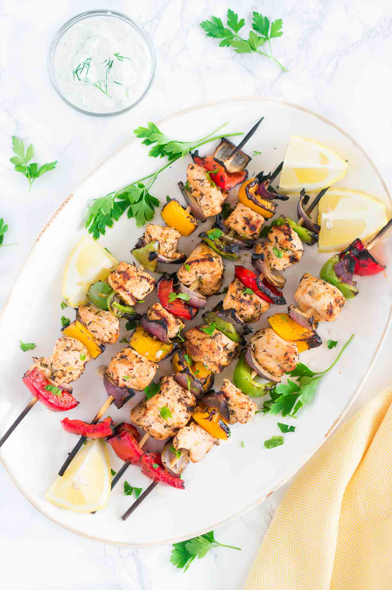

Mediterranean Chicken Kebabs
Juicy and flavorful Grilled Mediterranean Chicken Kebabs marinated in olive oil, lemon juice, garlic, and spices make for a light, delicious and easy dinner.
Prep Time: 40 min.
Cook Time: 10 min.
Total Time: 55 min.
Servings: 10 skewers
Calories: 228kcal
Author: Neli Howard | Delicious Meets Healthy
Ingredients:
Chicken Kebabs
- 3 chicken fillets, cut in 1-inch cubes
- 2 red bell peppers
- 2 green bell peppers
- 1 red onion
Chicken Kebab Marinade
- 2/3 cup extra virgin olive oil, divided
- juice of 1 lemon, divided
- 6 clove of garlic, chopped, divided
- 2 tsp paprika, divided
- 2 tsp thyme, divided
- 4 tsp oregano, divided
- 4 tsp salt, divided
- 2 tsp freshly ground black pepper, divided
Instructions:
Marinade
- Mix 1/2 of all ingredients for the marinade in small bowl. Place chicken in a ziplock bag and pour marinade over it. Marinade in the fridge for at least 30 minutes.
- Mix the other HALF of the ingredients in the same bowl pour into a ziplock bag with the vegetables. Marinade for at least 30 minutes.
- If you are using wood skewers, while the chicken and veggies are marinating, soak the skewers in water for about 15 minutes. You need to soak wooden skewers in water for about 20- 30 minutes to keep them from igniting right there on the grill. I have also noticed that it's much easier to slide out the meat and veggies on your plate if the skewers have been soaked before grilling.
Chicken Kebabs
- Thread the chicken and peppers and onions on the skewers. I usually place about 5-6 chicken pieces and a combo of peppers and onion in between.
- Heat an outdoor grill or indoor grill pan over medium-high heat. Spray the grates lightly with oil and grill for about 5 minutes on each side, or until the center is no longer pink.
- You can also bake this Mediterranean chicken skewers in the oven if you want to. Preheat the oven to 425 F. Place chicken skewers on roasting racks over two foil-lined baking sheets and bake for about 10-15 minutes, turn over once and bake for another 10 - 15 minutes on the other side, or until they are baked through.
Notes:
The nutrition label doesn't take into account that the marinade is discarded.
Nutrition:

Taken from DeliciousMeetsHealthy.com